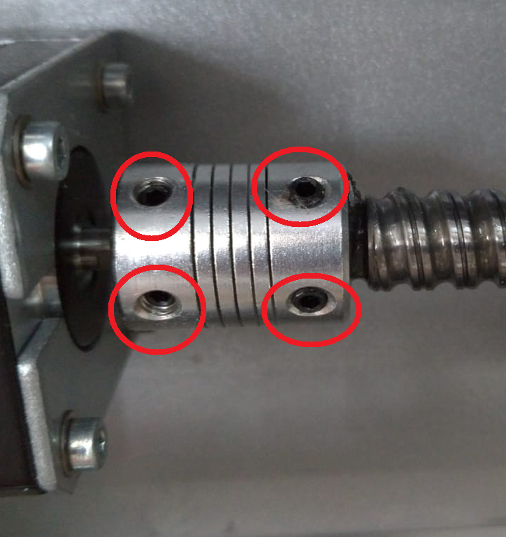
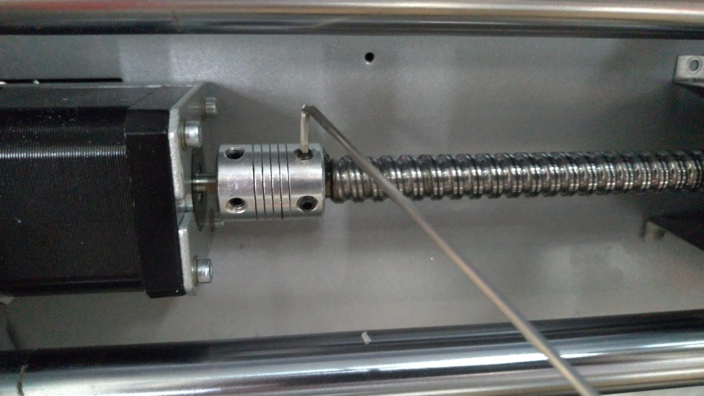
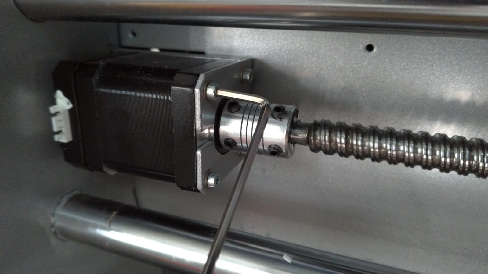
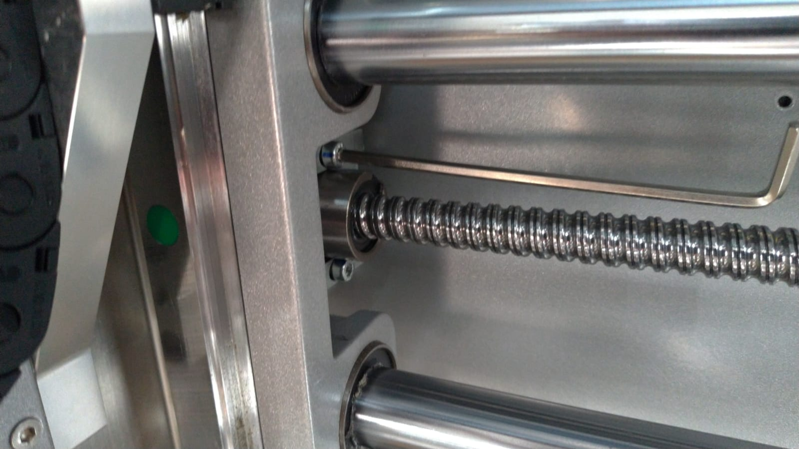
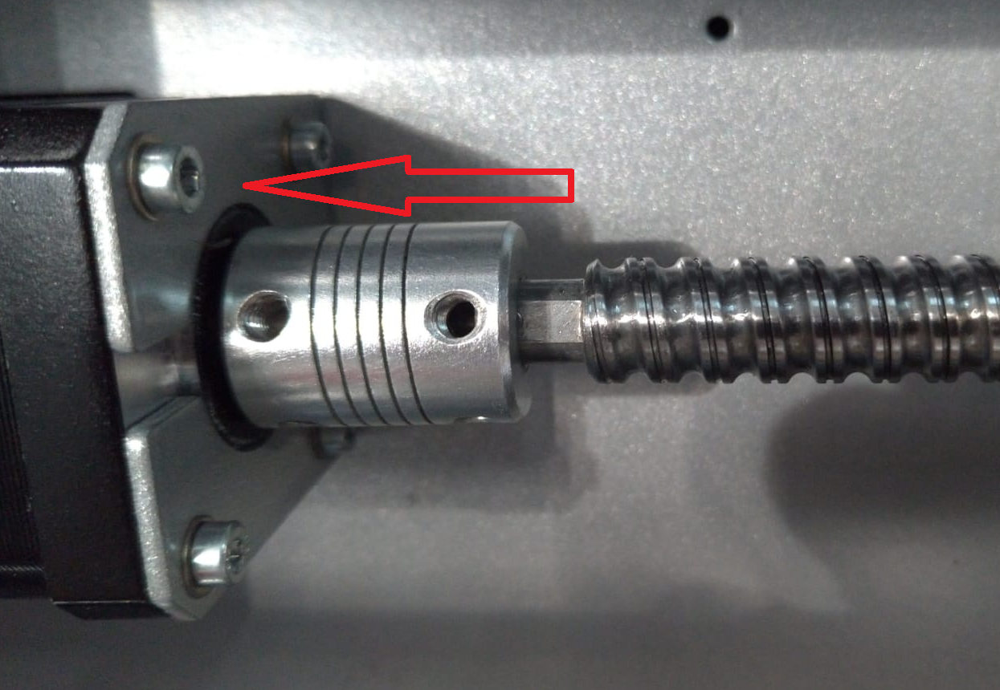
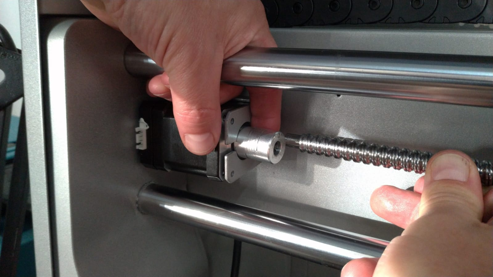
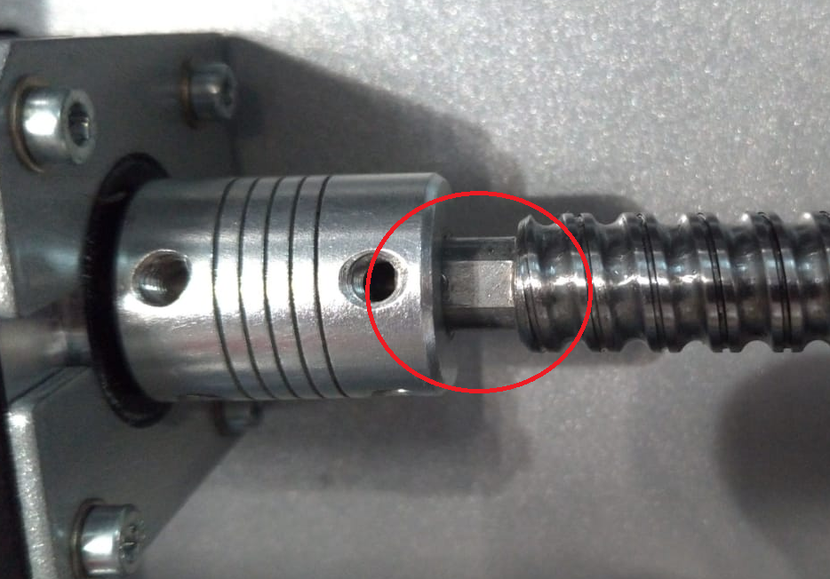
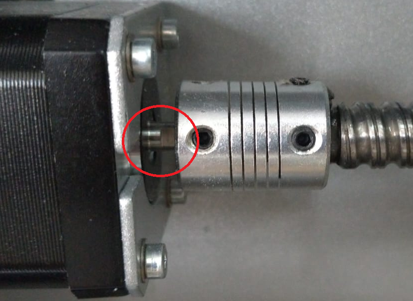

Technical Manual – Replacing the X-Axis Ball Screw Coupling
1. Tools & Preparation
Outils requis :
Clé Allen de 2mm
Clé Allen de 3mm
Preparation:
✔ Assurez-vous que la machine est hors tension et unplugged before beginning.
✔ Follow the disassembly instructions for removing the X-axis ball screw covers as outlined in the XYZ Motor Error Troubleshooting Guide.
2. Removing the Existing Coupling
2.1 Accessing the Coupling
Once the covers have been removed, locate the ball screw coupling. It is positioned on the left-hand side, connecting the motor shaft to the ball screw (Figure 1).

2.2 Loosening the Grub Screws
The coupling is secured by four grub screws—two on the motor shaft side and two on the ball screw side.
Utilisez une Clé Allen de 2mm to loosen all four grub screws (Figure 2).

2.3 Removing the Stepper Motor
Utilisez une Clé Allen de 3mm to remove the quatre vis holding the X-axis stepper motor in place (Figure 3).

2.4 Loosening the Ball Nut Screws
Slightly loosen the ball nut screws located on the right-hand side behind the spindle assembly. Do not fully remove them—just enough to allow slight movement (Figure 4).

3. Removing the Coupling
3.1 Creating Space to Remove Coupling
Slide the coupling to the far left as shown in Figure 5.
Apply moderate force to gently flex the ball screw backwards to create a gap.
Once there's enough clearance, slide the coupling out towards the right (Figure 6).


4. Installing the New Coupling
4.1 Positioning the New Coupling
With the ball screw still gently flexed, slide the new coupling into position.
Alignez la flat sections on the ball screw et motor shaft with the respective grub screw holes (Figure 7 and 8).
Tighten the grub screws using the Clé Allen de 2mm.


5. Final Assembly
5.1 Securing Components
Tighten all four grub screws on the ball screw coupling securely.
Reinstall and fasten the stepper motor using the Clé Allen de 3mm.
Re tighten the ball nut screws—be careful not to over-tighten.
5.2 Reattaching Covers
Replace all previously removed covers to restore full machine enclosure.
✅ Completion Checklist
Coupling installed and secured with all grub screws
Stepper motor securely fastened
Ball nut screws tightened (not over tightened)
Covers replaced
Machine safe and ready for power-up
You have now successfully replaced the X-axis ball screw coupling on the Carvera Air.